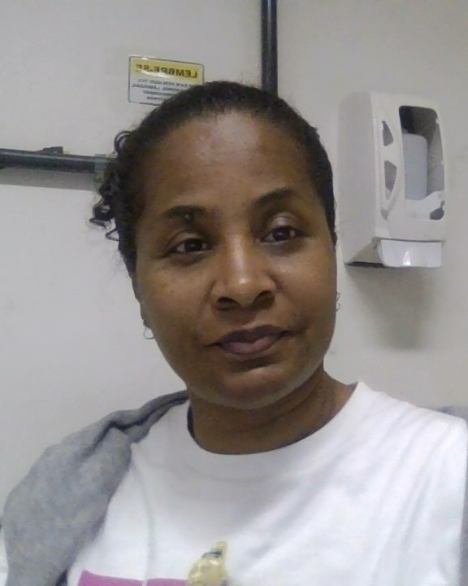

Paula Claro
O Poder Transformador da Educação: A Trajetória e a Dedicação de Paula
Aos 42 anos, nascida em Vinhedo e mãe de três filhos, Paula construiu uma sólida carreira de 27 anos dedicada integralmente à educação nas cidades de Louveira e Vinhedo. Sua relação com os livros e com o aprendizado começou cedo, fortemente influenciada pela mãe que, mesmo tendo tido pouco acesso aos estudos, fazia questão de levá-la à biblioteca e incentivar a leitura diária. Era dela a frase que Paula carrega como lema de vida: “conhecimento é a única bagagem e herança que se leva dessa vida”.
O caminho profissional até a sala de aula aconteceu passo a passo. Aos 15 anos, começou como Menor Aprendiz em um escritório. Mais tarde, formou-se em Educação Física, atuando como salva-vidas e professora infantil, passou por um concurso público para trabalhar como auxiliar de Educação Infantil durante 12 anos, formou-se em Pedagogia e, recentemente, concluiu uma nova Licenciatura em Artes Visuais (2025). Com novos concursos públicos, foi convocada para atuar como professora de Educação Básica I em Louveira (2021), Itupeva (2022) e Vinhedo (2023).
Principais Conquistas, Desafios e Propósito
- A Maior Conquista: Alcançar a estabilidade profissional por meio da efetivação em concurso público, coroando anos de esforço e dedicação aos estudos.
- Desafios Enfrentados: A superação de momentos de desrespeito por parte de alguns alunos ou responsáveis no cotidiano escolar, barreiras que nunca a fizeram desistir devido ao amor pelo impacto positivo que exerce na vida das crianças.
- Propósito Diário: Ajudar cada aluno a aprender a ler, escrever e conquistar novos horizontes através do ensino.
Para Paula, o significado de ser uma mulher que inspira reside em provar, através da própria história, que é viável enfrentar obstáculos e desenhar novos destinos por meio da perseverança.
Aos jovens e às mulheres que estão dando os primeiros passos rumo aos seus sonhos, ela deixa um conselho inspirador baseado em suas maiores convicções: